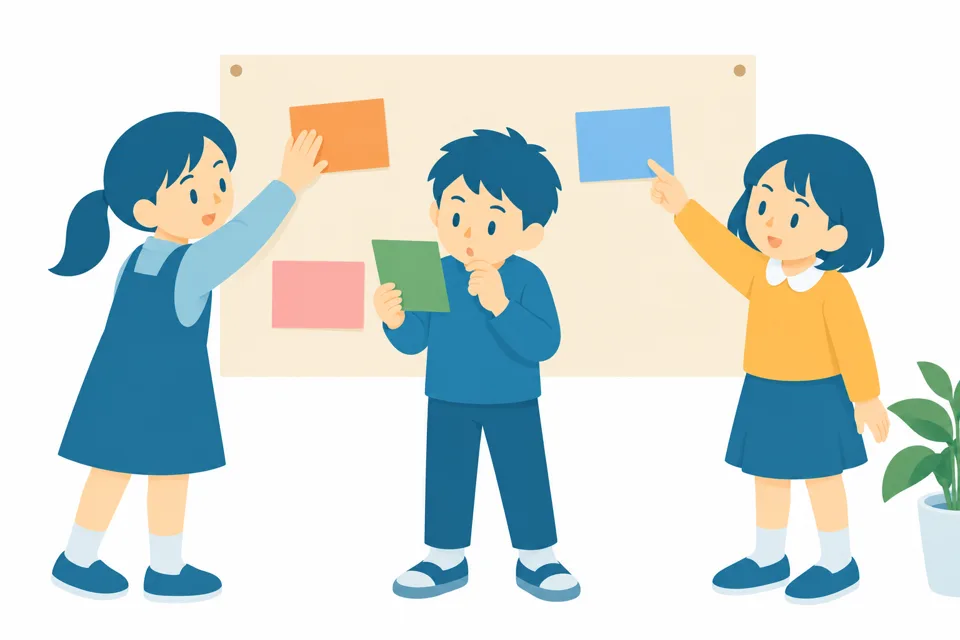
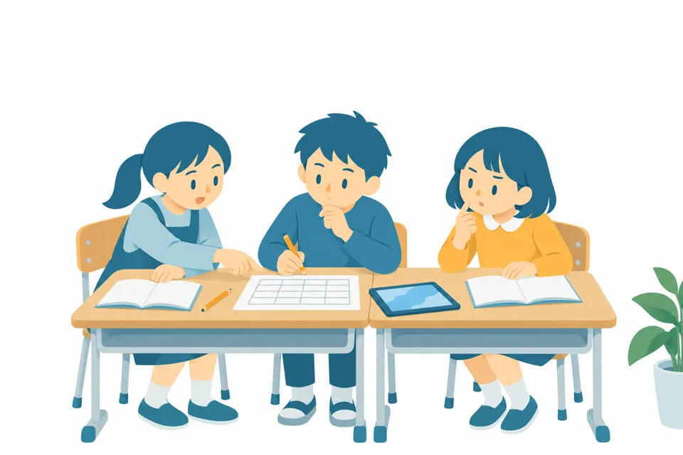
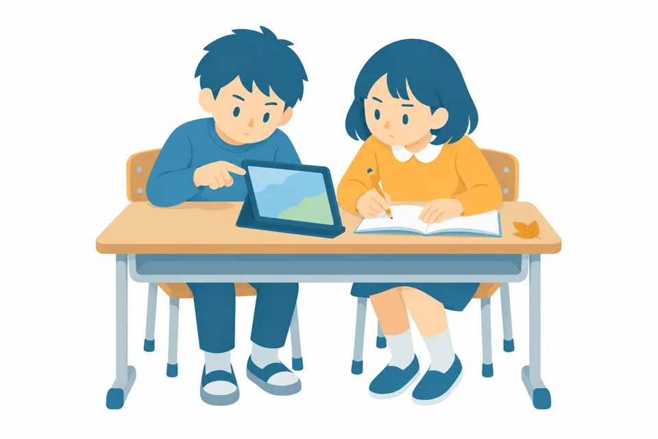
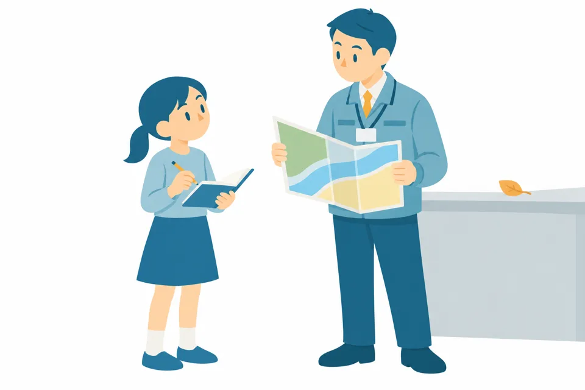
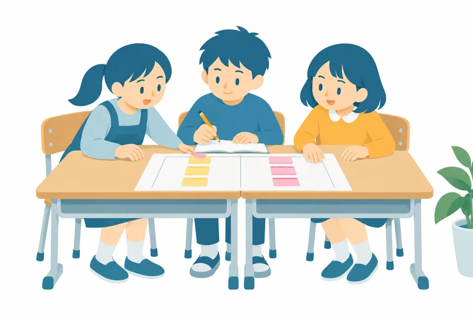
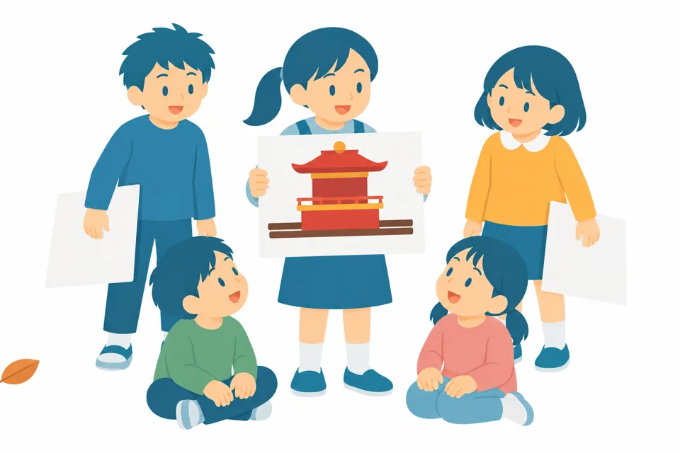

4年 社会「地域で受けつがれてきたもの」
飯塚山笠を調べよう
学習問題
飯塚山笠や博多祇園山笠など、祭りや行事は何のためにつくって、なぜみんな参加するのだろう。
学習の進め方
5つの順番で進めます

1見つける
気になるものから 学習問題をつくる
- 福岡県で受けつがれてきた祭りや行事、ものづくり、建物を出し合う
- 気になったことを「はてな」にして書く
- みんなのはてなから、学習問題をつくる
ノート

2計画する
予想を立てて 調べる計画をつくる
- 学習問題について、わけをつけて予想を立てる
- 何が分かれば予想が合っていると言えるかを決める
- 班で計画シートに書き、アドバイスカードで見直す
計画シート計画シートの書き方アドバイスカード


3調べる
読んで 聞いて たしかめる
- ホームページや本を読む。検索のことばにまよったら、Gemini Notebookに相談する
- 公民館の人や家の人にインタビューする
- 分かったことを、事実・言い伝え・人の思いに分けてノートに書く
- ほかの祭りや行事ともくらべる
インタビューのしかたGeminiのお願い文Gemini Notebook

4まとめる
学習問題に 自分の考えで答える
- 調べたことを、年表や表にまとめる
- 予想は合っていたかをたしかめる
- 「何のために」と「なぜみんな参加するのか」に、調べて分かったことをもとに答える
ノート計画シート

5考える
わたしたちに できることを考える
- まとめたことをもとに、受けつがれてきた祭りや行事のために、できることを出し合う
- いくつかをくらべて1つえらび、わけを書く
- 最後の1時間をかけて考える
ノート
調べるときのくり返し
調べるたびに、この順でたしかめます
ちがっていたら、計画を直して、もう一度。ちがっていたことも大事な結果です。
やくそく
- 話を聞いた人の名前は書かない。
- 家の人が山笠に出ているかどうかは書かない。
- 写真は「とってもいいですか」と聞いてからとる。
- 資料に書いていないことは「分からなかった」と書く。
調べるときは、Gemini Notebookに相談できます
検索のことばや、どの資料を見ればよいか、何が分かれば予想が合っていると言えるかを、いっしょに考えてくれます。答えは、どの資料に書いてあるかといっしょに返ってきます。
調べる先
まず、ここから読みます
飯塚山笠振興会 公式サイト飯塚山笠の入口http://iizukayamakasa.com/
山笠の歴史（飯塚山笠振興会）いつ、何のために始まった？ いつ止まって、いつまた始まった？http://iizukayamakasa.com/index.php?u=history
舁き山紹介（飯塚山笠振興会）五つの流れ（地区）の山笠http://iizukayamakasa.com/index.php?u=kakiyama
スケジュール（飯塚山笠振興会）7月の行事の日にち。子どもが出る行事もあるhttp://iizukayamakasa.com/index.php?u=schedule
夏の市民祭り「飯塚山笠」、今年の追い山は日曜開催に（筑豊経済新聞・2025年）追い山を日曜日に変えたわけhttps://chikuho.keizai.biz/headline/64
博多祇園山笠の由来（山笠ナビ）博多の山笠は、何のために始まったといわれている？https://www.hakata-yamakasa.net/knowledge/history/yamakasa-history/
博多祇園山笠行事（文化遺産オンライン）国の文化財としての説明https://online.bunka.go.jp/heritages/detail/159358
川渡り神幸祭（田川市）山笠が川に入る、田川市の祭りhttps://www.joho.tagawa.fukuoka.jp/kiji00344/index.html
福岡県文化財データベース県内の文化財や行事を自分でさがせるhttps://www.fukuoka-bunkazai.jp/
2026年10月20日に、開けることを確かめました。写真は公式のページで見ます。
使う紙
先生向け
この単元で使った紙です。印刷して使えます。例の中の学校名と人の名前は「〇〇」にしてあります。
学習の進め方（掲示用）A4たて1まい。5つの段階と日程。「今ここ」の札つき。ダウンロード
計画シート（子ども用・見本つき）Googleスプレッドシートに読みこめます。見本9行、空のシート、書き方の3まい。ダウンロード
計画シートの書き方（ノートに貼る）5mm方眼、B4よこ2まい。ダウンロード
計画アドバイスカードA4よこにA5が2まい。半分に切ってノートに貼ります。ダウンロード
インタビューのしかたとノートのお手本5mm方眼、B4よこ3まい。お願いとマナー、ノートの書き方の例。ダウンロード
Geminiのお願い文はがきやメールを書くときに、組み立てやヒントを返してもらう文6つ。ダウンロード
調べる力のルーブリックと、わたしの調べ方チェック表先生用2まい、使い方と学習指導要領との対応1まい、子ども用1まい。ダウンロード
板書計画（計画を見直す時間）A4よこ1まい。発問と予想される反応つき。ダウンロード